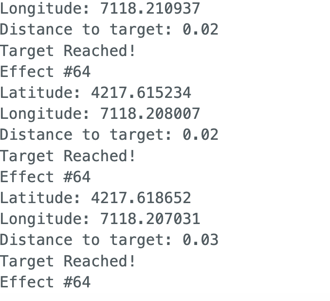

For this project, we wanted to explore how the design of a tangible user interface (TUI) can enhance productivity for individuals commuting long distances. We focused specifically on Wellesley students and faculty members who commute frequently using the Wellesley-MIT shuttle. Riding the bus between campuses can take up to an hour each way, and passengers who try to do work during the commute can experience motion sickness.
To solve this issue, we wanted to create a product that would improve nap quality. Being well-rested would help our target users increase productivity after their bus ride. We identified the following pain points that currently arise when napping on the bus:
Time-based alarms do not guarantee a passenger will wake up in time for their stop if there are delays due to traffic or the bus arrives early.
Setting or adjusting an alarm on a phone might distract passengers and reduce rest time.
Phone alarms ring out loud and disrupt other passengers.
Risk of missing one's stop is stressful and reduces nap quality.
The NAPtivator addresses each of the pain points with the novel features explained below.
Features
LOCATION-BASED ALARM
The NAPtivator uses GPS-location tracking to alert users when they are within range of their destination. Small haptic motors emit gentle vibrations once the user is within range.
PERSONAL
The vibration motors are placed directly on the wearer's temples, making the alarm system personal and reducing
disruptiveness to other bus passengers.
DISTRACTION-FREE
Our TUI is a wearable that reduces time spent on electronics. Eliminating the need to engage with a device minimizes the likelihood of getting distracted.
PROMOTES PRODUCTIVITY
Better nap quality boosts energy and increases productivity throughout the day.
FINAL PROTOTYPE
Elizabeth, Emma, and Kelly with Naptivator on Demo Day!
Design Process
SKETCHES
We began our ideation process by going through an extensive brainwriting process. This allowed us to come up with novel, creative ideas and inspired us to think more critically about our problem statement in the context of TUI’s. After narrowing down the scope of our project and selecting “naptivator” as our final idea, we created some rough sketches of the Naptivator headband. This helped us visualize where various electrical components would go on the headband and have a more concrete depiction of our intended user scenario. We also prompted Dall-E and Midjourney to generate images of the Naptivator headband based on our description of its functionalities and intended users. Although the drawings generated by Dall-E were a bit distorted, they inspired us to think about the wearability of the headband – for instance, the type of fabric we want to use, how much padding we should add to the headband, where we want the vibrations to be, etc.
LOW-FIDELITY PROTOTYPES
Our main priority for the low-fidelity prototype was to have a working interface with some simple circuitry. We also wanted to see how well the headband held up after putting in the batteries and circuit boards. To reduce the complexity of having to create a full, working circuit, we used little bits to create a manual buzzer. After we presented our low-fidelity prototype to the class, we decided to alter the design of our TUI to include an eye mask. A thick eye mask would help users unwind, fall asleep, and stay asleep by darkening their environment no matter what time of day they are using our TUI. The eye-mask cushion is encased in a stretchy band of fabric, which would also serve to conceal all the bulky circuit components. Some of the feedback we received mentioned concerns regarding the cleanliness of the headband after multiple uses and whether it would be washable/the headband design could be customized to the user’s preference. Hearing this, we decided to include a slit at the top edge of the eye mask so the inner eye cushion could be removable. As users would want to wash the headband, we decided it would be best to sew the microcontrollers and wiring onto the removable cushion. This would allow users to wash the headband without the cushion and wiring inside. Buttons on the outside of the headband controlling the microsensors would be used to set vibration settings, making our TUI more interactive rather and reducing the number of interactions with an app.
Based on some of the feedback we received, we altered the structure of the headband. Rather than having two sections of fabric that are adjustable using ties on the sides, we added a scrunched band on the back of the headband to automatically adjust to fit the wearer’s head. We created a revised prototype to fully visualize what these changes would look like and used a stretchier fabric to maximize comfort. Images and descriptions of the revised design are below.

HIGH-FIDELITY PROTOTYPE
With a concrete understanding of what our desired vision for Naptivator would look like, we began the iterative process of refining our low-fidelity prototype. One of the major changes we made was creating a fully functional circuit with haptic motors attached to the vibration sensors and Arduino GPS module. Since we wanted multiple vibration sensors on the headband, we soldered the sensors together in parallel to create a pleasant buzzing sensation. For this project, we used the Arduino Ultimate GPS breakout v3 module and connected it to the Arduino Uno to integrate it into our vibration system. After a lot of trial and error, we were able to program the microcontroller to receive the user’s desired destination (coordinates) as the input for the vibration sensors to start going off. Since our device relies on GPS data, it continuously compares the user’s current location with their desired location; once the user is within 0.2km of their chosen destination, the vibration sensors will comfortably buzz to alert the user that they have arrived. For our in-class demonstration, we set our location to be the entrance of the science center instead of the locomotion stops in Cambridge, MA. In terms of our horizontal prototype, we decided to use cotton as our choice of fabric, since it is the most comfortable and easily accessible fabric we had available to us. To allow a wide range of users to use our product, we added an elastic band to the headband, which also helps users put on and easily remove the headband. To address the concerns of the uncomfortable, bulky circuitry that protruded out from our low-fidelity prototype, we fastened our circuit and microcontroller onto a thicker, padded fabric with velcro so users can comfortably enjoy wearing the headband. Finally, we wanted our users to be able to customize and clean their headbands. We did this by separating the padded “insert” (with all the circuitry) from the outer headband layer. We included a zipper on the outer layer to allow users to switch out their headbands without damaging the electrical components.
There are 4 changes we would make to our project in future iterations.
Use a GPS component that would receive satellite signals indoors. Our current GPS only works outdoors and is ineffective on a bus.
Add buttons/switches to our circuitry for different stops along the MIT-Wellesley bus route. Our current prototype is programmed to a single location but buttons would give users more flexibility depending on which stop they are getting off at.
Replace the Arduino Uno and battery with smaller components. The Uno board and battery are large and bulky, making the front of the eye mask look slightly awkward.
Make more headband sleeves from different fabrics and patterns to allow users to personalize their eye masks.